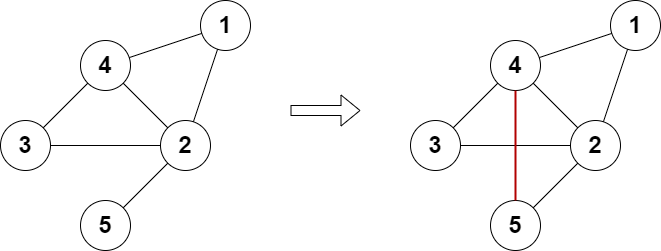
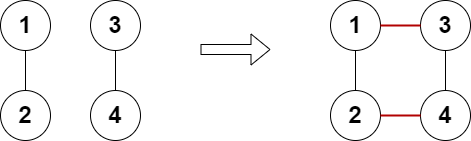
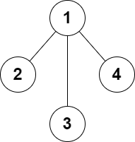

| Category | Difficulty | Likes | Dislikes |
|---|---|---|---|
| Algorithms | Hard | 355 | 59 |
uber | hrt
There is an undirected graph consisting of n nodes numbered from 1 to n. You are given the integer n and a 2D array edges where edges[i] = [ai, bi] indicates that there is an edge between nodes ai and bi. The graph can be disconnected.
You can add at most two additional edges (possibly none) to this graph so that there are no repeated edges and no self-loops.
Return true if it is possible to make the degree of each node in the graph even, otherwise return false.
The degree of a node is the number of edges connected to it.
Example 1:

Input: n = 5, edges = [[1,2],[2,3],[3,4],[4,2],[1,4],[2,5]]
Output: true
Explanation: The above diagram shows a valid way of adding an edge.
Every node in the resulting graph is connected to an even number of edges.Example 2:

Input: n = 4, edges = [[1,2],[3,4]]
Output: true
Explanation: The above diagram shows a valid way of adding two edges.Example 3:

Input: n = 4, edges = [[1,2],[1,3],[1,4]]
Output: false
Explanation: It is not possible to obtain a valid graph with adding at most 2 edges.
Constraints:
3 <= n <= 1052 <= edges.length <= 105edges[i].length == 21 <= ai, bi <= nai != bi